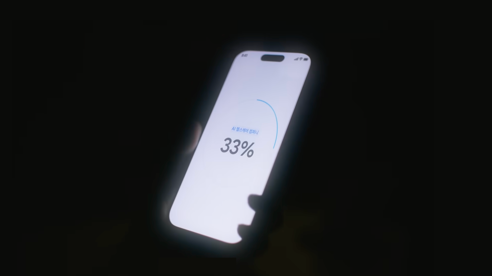

HD wallpaper: MAC KEYBOARD SHOR...
HR TECH
방법을 핏하게, 바이브 코딩으로 여는 'HRD 메이커' 시대
kt cloud 박상우
오늘 이 자리, 여러분에게 새로운 읽을거리가 되길 바랍니다.
글을 잘 쓰려면 어떻게 해야 할까요?
다문(多聞)
다독(多讀)
다작(多作)
다상량(多商量)
- 송나라 문인 구양수
바이브 코딩도 마찬가지입니다. HRD에는 참고할 만한 사례가 아직은 부족합니다.
"저런 것도 만들 수 있구나."
"우리 조직에 맞게 바꿔볼까?"
방법을 핏하게,
바이브 코딩으로 여는
'HRD 메이커' 시대
kt cloud 박상우
01
02
03
04
05
06
02
03
04
05
06
만들고 싶었지만, 만들 수 없었던 시간들
왜 HRD는 메이커가 되어야 하는가
HRD의 바이브 코딩, 개념이 아니라 실행 방식
실제 사례 — HRD가 직접 만든 것들
개인 실험에서 팀의 방식으로
지금의 도구가 사라져도 남는 것
왜 HRD는 메이커가 되어야 하는가
HRD의 바이브 코딩, 개념이 아니라 실행 방식
실제 사례 — HRD가 직접 만든 것들
개인 실험에서 팀의 방식으로
지금의 도구가 사라져도 남는 것
01
만들고 싶었지만,
만들 수 없었던 시간들
교육의 효과성을 높이고 싶었습니다
인재육성 업무를 하면서 교육 몰입도 향상, 임직원 역량 개발,
조직 활성화를 위해 다양한 앱과 웹 서비스에 늘 관심이 있었습니다.
시장에 있는 도구를 써보고, 새로운 업무 시도도 해보지만...
"담당자로서 현재 필요하고 딱 맞는 도구는
없는 경우가 많았습니다."
우리가 직면한 뼈아픈 현실: '전이(Transfer)'의 실패
Transfer Gap
Classroom to Workflow
Why It Breaks
범용 콘텐츠는 우리 조직의 맥락을 담지 못합니다.
속도는 느리고, 비용은 크고, 현업에 들어갔을 때의 핏은 늘 아쉬웠습니다.
Where It Finishes
학습은 교육장에서 끝나는 것이 아니라 업무 흐름에서 완성됩니다.
전이는 Classroom이 아니라 Workflow에서 일어나고, 우리는 그 구간의 도구가 필요했습니다.
70%
현업 적용의 구간을 설계하지 않으면 교육 직후 만족도는 실제 변화로 이어지지 않습니다.
교육 직후가 아니라, 현업 적용이 일어나는 순간에 전이가 완성됩니다. 그래서 새로운 도구가 필요했습니다.
그래서 만들어보려고 했습니다
💸
외부 업체 위탁
내부 시스템과 붙는 순간, 일정과 범위부터 다시 조율해야 합니다.
첫 화면을 받기까지 오래 걸리고, 수정 비용도 추가로 붙기 쉽습니다.
결과물이 나와도 내 생각의 디테일까지 통제하기는 어렵습니다.
평균 3~6개월 · 고비용
🏢
내부 개발팀 의뢰
우선순위에서 밀리면 작은 실험일수록 대기열 뒤편으로 밀려납니다.
요구사항을 설명하는 데 시간을 쓰지만, 정작 시도 타이밍은 자꾸 늦어집니다.
리소스가 부족할수록 '이번엔 일단 보류'로 끝나는 경우가 많았습니다.
우선순위 충돌 · 실험 타이밍 상실
🤝
개발 잘하는 지인에게 부탁
부탁하는 순간부터 이미 미안함이 생기고, 요구를 세게 말하기가 어려워집니다.
결과가 조금 달라도 다시 설명하고 고쳐달라고 요청하는 데 부담이 생깁니다.
결국 '이 정도면 됐다'며 핏이 덜 맞는 결과를 받아들이게 됩니다.
수정 요청 부담 · 통제권 약화
😮💨
어느 경로든 시간, 비용, 통제권 — 셋 중 하나는 포기해야 하는 경우가 많다
나를 멈추게 했던 진짜 장벽
🚫
"저는 문과라서요..."
기술적인 것은 전문가의 영역이라는
견고한 고정관념
😨
"망가지면 어쩌죠?"
코드 한 줄 잘못 건드렸을 때의
막막함과 두려움
나를 두렵게 했던 것은 논리가 아니라 낯선 도구였습니다.
그러던 어느 날, 유튜브에서
Discovery
유튜브와 쓰레드에서 처음 마주한
유튜브와 쓰레드에서 처음 마주한
'바이브 코딩(Vibe Coding)'
유튜브와 쓰레드에서 바이브 코딩이라는 워딩을 처음 만났습니다.
"코딩"이라는 단어에 여러 번 멈췄던 기억이 있었습니다.
그래서 처음엔
또 어려운 세계 이야기겠지
싶었습니다.
또 어려운 세계 이야기겠지
싶었습니다.
하지만 필요와 호기심이 만나면, 코딩을 몰라도 AI와 함께 필요한 서비스를 만들어 낼 수 있는 시대라는 점이 눈에 들어왔습니다.
과거 노코드 툴의 제한적인 결과물이 아니라, 실제로 작동하는 사례들이 보이기 시작하면서 "배워서 언젠가"가 아니라 만들면서 배워볼 수 있겠다는 감각이 생겼습니다.
그 순간부터 코딩은 더 이상 시험 과목이 아니라, 문제를 해결하기 위한 새로운 인터페이스처럼 느껴졌습니다.


[ 방대한 양, 알 수 없는 기호, 복잡한 언어 ]
매번 'Hello World'에서 멈추던 과거...
매번 'Hello World'에서 멈추던 과거...
01
02
03
04
작은 성공이 만든 전환점
단순히 보는 걸 넘어,
쓰는 사람 기준으로 최적화된 도구를
직접 만들 수 있다는 자신감
생각보다 빠르고 쉽게 만들어지면서 도파민이 터졌습니다.
"만들었다"는 성공의 경험이 직무의 몰입을 끌어올렸고,
이 감각이 HRD 업무 문제 해결에도 똑같이 적용될 수 있다는 확신으로 이어졌습니다.
사례 1. 맥 단축키 & 제스처 배경화면 생성기
Tiny Case
문제는 작았지만, 방식의 전환을 체감하게 한 첫 실험이었습니다.
01
맥북 단축키와 제스처를 몰라 생산성이 급격히 떨어졌습니다.
02
구글링으로는 한눈에 들어오는 이미지도, 내 취향에 맞는 결과도 찾기 어려웠습니다.
Google
macbook shortcuts wallpaper
⌕
⌨
🎤
AI 모드
전체
이미지
쇼핑
짧은 동영상
웹
더보기
FI studio
Windows
Iphone wallpaper
Shortcuts cheat sheet wallpaper
Adobe
Photoshop
Windows 10
Shortcut stickers
Mac OSX Keyboard Shortcuts Wallpa...
9 MAC BOOK ideas | ...
SUBLIME TEXT 2 - BLACK CHEAT ...
ST3 CHEAT SHEET Ultra, Computers, ...
Cheat sheet 1080P, 2K, 4K, 5K HD wallp...
Mac shortcuts wallpaper with a motivatio...
PREMIERE CC Ultra, Computers, Mac, c...
macbook shortcuts ...
Mac keyboard shortcuts HD wallpapers ...
달라진 것 (Before vs After)
Before
기존 방식은 조율 비용이 너무 컸습니다.
- 1내부 개발 의뢰 후 대기
- 2외주 견적과 일정 협의
- 3지인 도움 요청 후 애매한 결과
- 4결국 엑셀/PPT로 타협
Typical Cost
3~6개월 / 수백만 원
After
아이디어를 바로 프로토타입으로 옮기게 됐습니다.
- 1문제를 발견하면 바로 AI와 대화
- 2마음에 안 들면 즉시 피드백
- 3내 의도가 코드 없이 결과물에 반영
- 4배포와 공유까지 하루 안에 가능
Typical Speed
30분~하루 / 0원에 가까움
"만들었다"는 작은 도파민이 자기주도적 문제해결을 이끕니다. 그렇다면 HRD 담당자가 왜 직접 이 방식으로 만들어야 하는가?
✦
✦
✦
✦
✦
✦
02
왜 HRD는
메이커가 되어야 하는가
현장에서 반복되는 장면
바쁜 팀장님들에게 필수 자격 취득 과정을 안내해야 했습니다.
안내사항 텍스트가 너무 많아 일부는 놓치고,
준비 없이 응시했다가 탈락하는 사태가 계속 발생했습니다.
문제는 공지의 '양'이 아니라,
체감 가능한 경험의 부재였습니다.
기존 방식의 구조적 한계
📦
맥락의 부재
범용 외부 콘텐츠는 넘치지만, 우리 조직만의 맥락과 언어가 빠져 있습니다.
⏰
우선순위의 충돌
긴 강의와 문서형 학습은 바쁜 현업의 1순위가 되기 어렵고, 적용은 늘 뒤로 밀립니다.
🖐
경험 중심의 변화
현업은 긴 설명서보다 직접 해보며 이해하는 시뮬레이션 방식에 가장 빠르고 확실하게 반응합니다.
전통적 HRD vs 지금 필요한 HRD
Old
전통적 운영자
범용 콘텐츠를 고르고 긴 과정을 운영하며, 마지막 구현은 외부에 의뢰하는 방식입니다.
- 1일괄적 지식 전달
- 2긴 강의 중심 설계
- 3우리 회사의 맥락 부족
New
메이커형 설계자
현장의 진짜 문제를 발견하고, 우리 조직 맥락에 맞는 학습 도구와 경험을 직접 만드는 방식입니다.
- 1목적형 개입
- 2핸즈온 경험 설계
- 3빠른 제작과 무한 개선
HRD는 어디로 진화하는가? (역량에서 스킬 중심으로)
역량 중심 조직에서 스킬 중심 조직으로 옮겨가는 지금,
우리 조직에 맞는 도구를 직접 만드는 주체로 진화해야 합니다.
01
Operator
교육 일정 · 수강 관리
출석 체크 · 비용 정산
운영 담당자
›
02
Curator
외부 콘텐츠 선정
강사 섭외 · 프로그램 기획
기획 담당자
›
03
Designer
조직 맞춤 커리큘럼
학습 여정 설계
설계 담당자
›
04
Maker
필요한 도구를
직접 설계 · 제작 · 배포
✦ 지금, 여기
브리지: 이제 경쟁력의 기준이 바뀝니다
이제 경쟁력은 더 좋은 과정을 고르는 데서 끝나지 않습니다.
우리 조직이 지금 필요로 하는 경험을 얼마나 빠르고 맥락 있게 만들 수 있는가가 훨씬 중요해졌습니다.
그렇다면 코딩도 모르는 우리가 어떻게 직접 만드는가. 그 답이 바로 바이브 코딩입니다.
03
HRD의 바이브 코딩,
개념이 아니라 실행 방식
실시간 밸런스게임 — 여러분의 생각은?
바이브 코딩은 개발자 흉내가 아니라 실행 방식이다
Working Definition
바이브 코딩은 아이디어를 자연어로 설계하고, 바로 작동하는 형태로 검증하는 실행 방식입니다.
핵심은 개발자처럼 보이는 것이 아니라, 문제를 발견한 사람이 가장 빠르게 프로토타입을 만들고 현장 반응을 반영해 개선하는 루프를 직접 갖는 것입니다.
01
문제 발견
현장에서 반복되는 불편과 학습의 막힘을 포착합니다.
02
자연어 설계
원하는 경험, 화면, 흐름을 문장으로 구체화합니다.
03
즉시 제작
AI와 대화하며 앱, 웹, 시뮬레이션의 첫 버전을 만듭니다.
04
현장 검증
실제 사용자의 반응으로 작동 여부와 핏을 확인합니다.
05
빠른 개선
피드백을 반영해 하루 안에도 여러 버전을 순환시킵니다.
Why HRD Fits
HRD는 원래부터 문제를 해석하고 학습 흐름을 설계하던 직무였습니다.
- A현장의 불편을 빠르게 포착한다.
- B행동 변화를 만드는 경험으로 구조화한다.
- C반응 데이터를 읽고 개선안을 다시 설계한다.
Not The Point
개발자가 되자는 이야기가 아닙니다.
문제 해결의 마지막 단계를 외주와 의존의 영역에만 남겨두지 말고, 우리 조직에 필요한 경험을 직접 형태로 만들 수 있는 힘을 갖자는 이야기입니다.
Role
설계자
Interface
자연어
Outcome
실행력
방법론의 전환: ISD에서 Agile L&D로
"Learning in the Flow of Work를 실현하는 가장 실천적인 방식이 바로 바이브 코딩입니다."
전통적 ISD (ADDIE)
완벽한 설계 후 구축
분석
설계
개발
실행
평가
바이브코딩 x L&D
시도하며 완성해가는 경험
문제 발견
즉시 구현
현장 피드백
반복 개선
AI-Augmented ADDIE: 모델의 재발견
A — 분석
분석
학습 데이터 AI 분석으로 실시간 니즈 도출
니즈 파악과 이슈 감지가 더 촘촘해지고, 분석이 실시간에 가까워집니다.
D — 설계
설계
AI 기반 모듈 구성과 코스웨어 구조화
과정, 화면, 평가, 인터랙션의 뼈대를 빠르게 시뮬레이션할 수 있습니다.
D — 개발
개발
바이브 코딩으로 프로토타입 즉시 제작
설계 후 개발이 아니라, 설계와 개발이 거의 동시에 진행됩니다.
I — 실행
실행
AI 튜터와 피드백 루프로 개별화된 적용 지원
실제 사용 장면을 빨리 확보하고, 학습 경험을 현장에서 조정할 수 있습니다.
E — 평가
평가
성과 데이터 분석 후 다음 학습 경로 추천
평가가 종료 단계가 아니라 다음 실험을 여는 입력값이 됩니다.
ADDIE는 오래된 모델이 아니라, AI와 만나면서 실시간 실행 모델로 재구성될 수 있습니다. 핵심은 개발 단계가 더 이상 병목이 아니라는 점입니다.
HRD 메이커의 5대 핵심 역량
T
Thinking
문제를 정확히 정의하는 힘
C
Context
조직 맥락과 언어를 읽는 힘
F
Framework
흐름과 구조를 설계하는 힘
C
Checkpoint
이정표와 측정 지점을 두는 힘
D
Debugging
피드백을 즉시 개선으로 연결하는 힘
핵심은 타이핑이 아니라 논리와 맥락
코딩 능력보다 중요한 것은 우리 조직을 깊이 이해하고 문제를 날카롭게 정의하는 역량입니다.
이미 우리 안에 있는 '메이커'의 DNA
T
Thinking니즈를 솔루션 아키텍처로 전환
C
Context조직의 언어를 프롬프트로 변환
F
Framework모델을 실행 가능한 앱으로 가시화
C
Checkpoint운영을 넘어 제품의 이정표 수립
D
Debugging피드백을 도구 고도화에 바로 정렬
바이브 코딩은 새로운 기술을 배우는 일이 아니라, HRD가 원래 잘하던 문제 발견, 설계, 피드백 역량을 소프트웨어로 실체화하는 방식입니다.
HRD × Vibe Coding = HRD 메이커
HRD Domain
문제를 읽고, 맥락을 이해하고, 학습 경험을 설계하는 전문성
- 01현업의 진짜 페인포인트를 포착
- 02조직의 언어와 문화에 맞게 구조화
- 03행동 변화로 이어질 여정 설계
The Shift
Maker
직접 설계하고, 직접 만들고, 직접 고치는 HRD
구매와 위탁의 역할을 넘어서, 문제 해결 도구를 스스로 실체화하는 주체
Vibe Coding Engine
AI와 대화하는 방식이 실행 속도를 바꿉니다.
Prompt
Prototype
Preview
Deploy
문법보다 의도, 코드보다 구조, 완성보다 반복이 중요해집니다. 그래서 HRD가 가장 빠르게 흡수할 수 있는 실행 방식입니다.
교육의 효과성은 핏한 콘텐츠와 방법론에서 나오고, 이제 그 핏을 직접 만들 수 있는 시대가 왔습니다. HRD 담당자가 메이커가 되는 것, 그게 오늘의 핵심 메시지입니다.
04
실제 사례 —
HRD가 직접 만든 것들
HRD가 직접 만든 문제 해결 도구들
Portfolio Snapshot
이 사례들의 공통점은 '멋진 앱을 만든 것'이 아니라, 학습과 변화의 병목을 직접 풀었다는 점입니다.
즉, 바이브 코딩은 기술 시연이 아니라 HRD의 실무 문제를 푸는 방식이었습니다.
Case 01

KAC Support Workflow
KAC 자격 지원 시스템
서류 점검부터 모의고사까지, 응시 전환을 끌어올리는 지원 경험으로 재구성했습니다.
Case 02

DISC Dynamics Report
DISC 조직 다이내믹스 진단
개인 성향 설명을 넘어, 팀의 커뮤니케이션 언어를 함께 읽는 조직 대화 도구로 만들었습니다.
Case 03

Calibration Simulator
칼리브레이션 시뮬레이터
제도 설명이 아니라, 임원들이 직접 만져보며 기준을 합의하는 체감형 운영 도구로 확장했습니다.
대표 사례 1 : KAC 자격취득 지원 : 서류점검 -> 모의고사
Product View
데모 열기
KAC document check
Step 01
서류 점검
응시 전 필수 조건을 업로드 즉시 확인하고, 누락을 줄여 준비 리듬을 초반부터 바로잡았습니다.
Actual Rollout
Slack Snapshot
대표 사례 1 : KAC 자격취득 지원 : 서류점검 -> 모의고사
Product View
데모 열기
KAC mock test
Step 02
모의고사
실제 시험과 유사한 흐름을 먼저 경험하게 해 준비도를 높이고, 부족한 지점을 스스로 인식하도록 설계했습니다.
Actual Rollout
Slack Snapshot
KAC 사례의 임팩트
95%
KAC 자격 취득 과정 최종 합격률
단순 공지를 넘어, 선결조건을 직접 점검하고 시험 흐름을 미리 경험하도록 바꿨을 때 실제 성과가 따라왔습니다.
Before
기준 설명 중심
문서를 읽고 스스로 체크해야 했습니다.
After
준비 경험 중심
실제 응시 흐름을 미리 체험하게 했습니다.
Lesson
행동은 체험이 바꿉니다.
핏한 도구 하나가 준비도의 전체 리듬을 바꿨습니다.
선결조건부터 경험으로 바꾸다
Before
선결조건은 늘 행정의 언어로 전달됐습니다.
- 1시험 전 서류 기준을 텍스트로 길게 안내
- 2코치와 담당자가 수십 건을 수작업 확인
- 3누락과 반복 안내로 준비 리듬이 깨짐
Pain
설명은 많았지만 준비 경험은 부족
After
준비 과정을 '경험'으로 설계했습니다.
- 1서류 점검을 자동 판별 인터페이스로 전환
- 2실제 시험 유사 모의고사로 불안을 감소
- 3기준 충족과 준비도를 분리하지 않고 하나의 여정으로 연결
Result
행정 체크리스트가 학습 동기 장치로 바뀜
이 사례의 포인트는 AI를 썼다는 사실보다, 선결조건을 사람을 움직이는 경험으로 다시 설계했다는 점입니다.
대표 사례 2: DISC 조직 다이내믹스 진단
Report View
Problem
개인 성향 진단은 많았지만, 조직의 맥락으로 번역된 도구는 부족했습니다.
외부 진단 시스템은 비싸고, 결과 해석도 개인 인지 수준에서 끝나는 경우가 많았습니다.
Intervention
개인 결과를 팀의 대화 언어로 바꾸는 내부 시스템
같이 일하는 방식, 협업 가이드, 리더의 대화 포인트를 함께 읽을 수 있도록 설계했습니다.
Outcome
개인 진단을 조직 대화로 전환
진단 결과가 리포트에서 끝나지 않고, 팀 회의와 피드백 대화의 소재로 이어지도록 설계했습니다.
팀 회의 연결
협업 언어 학습
조직 대화 도구
대표 사례 3: 칼리브레이션 시뮬레이션

Interactive Change Tool
말로 설명하던 제도를, 직접 만져보는 시뮬레이션으로
Problem
제도는 바뀌었지만 시스템은 아직 없었습니다.
엑셀과 표로는 임원들이 감을 잡기 어려웠고, 설명만으로는 제도 수용성과 공감대를 만들기 힘들었습니다.
Solution
핵심 판단 요소를 눈앞에서 조정해보는 워크숍형 시뮬레이터
성과 영향도, 조직 형평성, 예산 제약을 동시에 보며 직접 합의를 만들 수 있게 했습니다.
Workshop Score
칼리브레이션 데모
성과 영향도85%
조직 형평성60%
예산 제약22%
온보딩에도 적용했습니다
Expansion
한 번 도구를 만들기 시작하면 적용 범위는 빠르게 넓어집니다. 온보딩도 예외가 아니었습니다.
Peer 마니또 시스템
신규 입사자와 기존 팀원을 연결하고, 가벼운 미션으로 소통을 유도하는 참여형 장치를 만들었습니다.
30/60/90 피드백 시스템
시점별 자가진단과 리더 리포트를 자동 연결해, 온보딩 여정 전체를 데이터로 쌓을 수 있게 했습니다.
잠깐, 여러분의 선택은? (🎯 조직 밸런스 게임)
Audience Interaction
"신입사원에게 당장 더 필요한 것은?" 같은 질문을 던지고, 조직의 인식 차이를 바로 데이터로 대화하게 만들 수 있습니다.
Choice A
완벽한 A-Z 업무 매뉴얼
안정감과 정보의 완결성을 우선하는 관점
VS
Choice B
따뜻한 커피와 비전 미팅
관계 형성과 심리적 안전을 먼저 여는 관점
Live Poll Kit
발표 현장에서는 URL 또는 QR만 바꿔서 바로 쓸 수 있는 참여형 화면으로 만들었습니다. 부서별 인식 차이를 숫자가 아니라 대화의 재료로 꺼내는 장치입니다.
QR / URL
이런 현장용 도구도 바이브 코딩으로 빠르게 제작하고, 발표 맞춤형으로 바꿔가며 쓸 수 있습니다.
04
어떻게 만들었나:
프로세스와 도구
잠깐, 여러분의 선택은? (🎯 조직 밸런스 게임 라이브)
Live Interaction
이번에는 설명이 아니라, 실제 앱으로 밸런스 게임을 바로 진행해보겠습니다.
맥 창 형태의 데모 화면 안에서 바로 플레이하고, 좌측 상단 초록 버튼으로 발표용 전체화면 실행도 가능합니다.
도구 개발 접근법의 진화
Waterfall
문제를 설명하는 데 많은 에너지를 쓰고, 실제 화면을 보는 건 가장 늦었습니다.
문제 정의와 요구사항 문서화
개발팀/외주 미팅과 우선순위 설득
긴 대기와 커뮤니케이션 비용
결과물 확인 후에도 수정 난도 높음
Vibe Coding
문제를 발견한 사람이 가장 먼저 화면을 만들고, 가장 빨리 수정합니다.
현장에서 발견한 불편을 바로 프롬프트로 정리
30분 안에 첫 프로토타입 생성
동료와 함께 보며 바로 피드백
같은 날 수정, 배포, 공유까지 연결
달라진 것은 속도만이 아닙니다. 설명 중심의 협업이, 화면 중심의 협업으로 바뀌었습니다.
실행의 동력이 되는 '도파민 루프(Dopamine Loop)'
Momentum Engine
바이브 코딩의 진짜 힘은 기술 자체보다, 작은 성공이 다시 시도를 부르는 심리적 루프에 있습니다.
1
불편의 발견
"이 부분이 아쉬운데?"라는 문제 제기
2
자연어 프롬프트
필요한 경험과 기능을 문장으로 설계
3
즉시 프로토타입
눈앞의 결과물이 빠르게 등장
4
작은 성공
"어? 이게 진짜 되네?"라는 자신감 확보
5
반복 개선
더 큰 문제를 다시 도전하게 만드는 동력
거창한 프로젝트가 아닙니다. 작은 성공의 짜릿함이 다음 문제를 해결할 실행력을 만들고, 그 실행력이 결국 HRD의 방식 자체를 바꿉니다.
바이브 코딩 필수 도구함
Tool 01
AI
AI 대화형 파트너
Claude, ChatGPT 같은 모델과 대화하며 요구사항을 정리하고 화면과 로직의 방향을 빠르게 맞춥니다.
Tool 02
IDE
AI 통합 에디터
Cursor, Windsurf 같은 에디터에서 대화한 내용을 바로 코드와 화면에 연결하며 수정합니다.
Tool 03
URL
원클릭 배포
Vercel, Netlify에 배포해 모바일과 웹에서 바로 검증하고 동료에게 즉시 공유합니다.
거창한 개발 스택이 아니라, 문제를 발견한 사람이 실험을 끝까지 이어갈 수 있는 최소 도구 세트면 충분합니다.
05
개인 실험에서
팀의 방식으로
바이브 코딩으로 일하는 방식의 변화
Before
요구사항을 설명하는 일이 실질적인 실행보다 길었습니다.
- 1요구사항 정의서와 발표 자료를 먼저 만듦
- 2개발팀/외주와 미팅하며 설득
- 3기약 없는 대기 후 뒤늦게 결과 확인
- 4핏이 안 맞아도 수정 비용이 큼
After
화면을 보면서 이야기하니 협업 방식 자체가 달라졌습니다.
- 1현장의 문제를 프롬프트로 바로 정리
- 230분 안에 첫 결과물을 함께 확인
- 3동료 피드백을 반영해 즉시 수정
- 4빠르게 배포하고 현장에서 다시 학습
핵심 변화는 개발 속도가 아니라, 문제를 다루는 팀의 리듬이 짧아졌다는 점입니다.
바이브 코딩을 위한 3단계 퀵스타트
01
Discover
페인포인트를 잡습니다.
엑셀 수작업, 따분한 공지, 느린 프로세스처럼 반복해서 불편한 지점을 먼저 선명하게 정의합니다.
02
Sync Vibe
AI와 의도를 맞춥니다.
무엇을 왜 만들고 싶은지 자연어로 설명하며 화면, 기능, 흐름의 톤을 빠르게 정렬합니다.
03
Fast Iteration
보면서 바로 고칩니다.
외주 수개월 대신 10분 단위 피드백으로 반복하면서, 완성도보다 학습 속도를 먼저 확보합니다.
처음부터 거대한 서비스를 만들 필요는 없습니다. 작고 명확한 문제 하나로 시작하는 것이 가장 좋은 퀵스타트입니다.
가장 큰 장벽: "내가 어떻게 해..."
"저는 문과라서요..."
"제 PC에는 파이썬도 안 깔려 있는데요..."
우리가 두려워했던 것은 코딩의 논리보다도, 낯선 문법과 에러를 혼자 감당해야 한다는 감각이었습니다.
즉, 본질적 장벽은 "문제 해결 능력의 부족"이 아니라 "타이핑과 디버깅에 대한 불안"이었습니다.
이제 타이핑은 AI가 합니다. 우리는 무엇을, 왜 만들 것인지라는 설계와 판단에 더 집중하면 됩니다.
06
지금의 도구가 사라져도
남는 것
리스크와 극복 방안 (Governance)
Risk Map
경계해야 할 리스크
- 01보안 및 기밀 데이터 유출 위험
- 02AI 환각에 따른 오작동과 잘못된 판단
- 03무분별한 시도에서 오는 비용과 운영 혼선
Guardrail
해결을 위한 체크포인트
- A사내 승인 플랫폼과 폐쇄형 환경 우선 사용
- B민감 데이터와 개인정보는 반드시 마스킹
- C결과물을 비판적으로 검토하는 AI 리터러시 확보
Security
민감 정보는 넣지 않는다.
Review
결과물은 반드시 사람이 검수한다.
Scope
작은 실험부터 운영 범위를 넓힌다.
결국, 도구보다 중요한 것은 태도
수많은 AI 코딩 툴은 등장하고 또 사라질 것입니다.
하지만 "우리 조직의 문제를 내가 직접 풀어낼 수 있다"는 감각은 사라지지 않습니다.
그 감각이 남는 순간, HRD는 더 이상 과정 운영자에 머무르지 않고 변화의 메이커가 됩니다.
Attitude 01
문제를 외주로 넘기기 전에 직접 구조화해 본다.
Attitude 02
작게 만들고, 빨리 검증하고, 자주 고친다.
Attitude 03
HRD의 설계 역량을 도구로 연결한다.
사실, 이 프레젠테이션도
Scan for Resources & Q&A